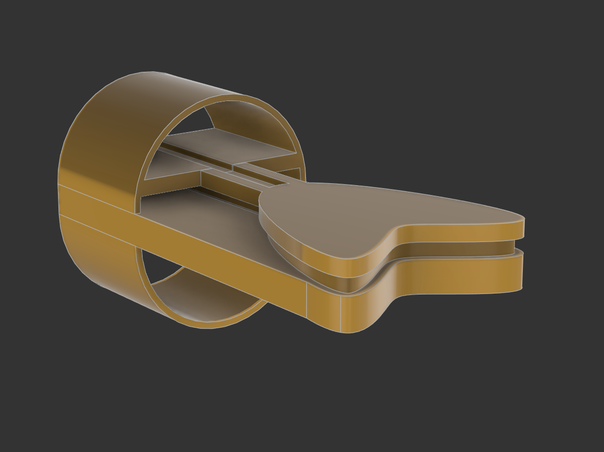
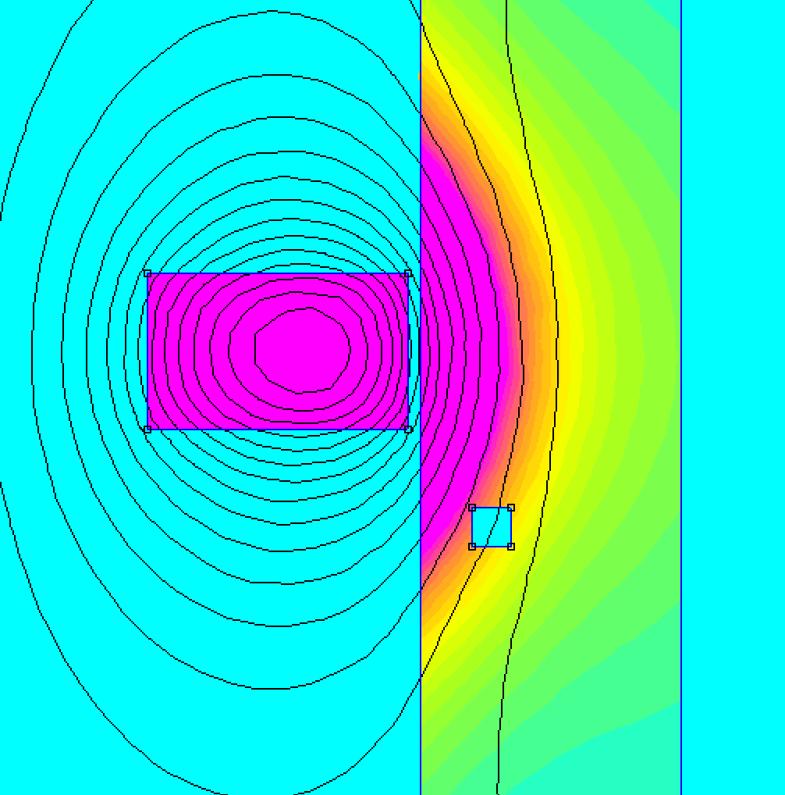

Design, fabrication, and testing of a custom ECT probe built from scratch — capable of detecting surface flaws in conductive materials and distinguishing defect signals from liftoff noise.

To design, fabricate, and test a custom Eddy Current Testing probe capable of detecting surface flaws in conductive materials — demonstrating the principles of electromagnetic induction and signal impedance analysis.
Commercial ECT probes are expensive, closed systems. The challenge was to build a low-cost, functional probe from scratch that could distinguish between a crack (a real defect) and liftoff (distance variation from the surface) — a common and difficult source of noise in NDT.
